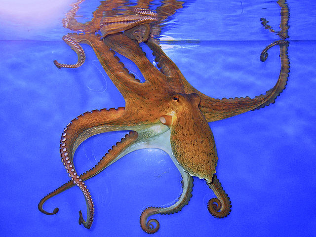
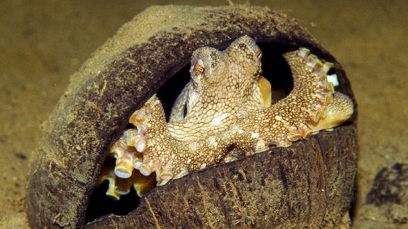
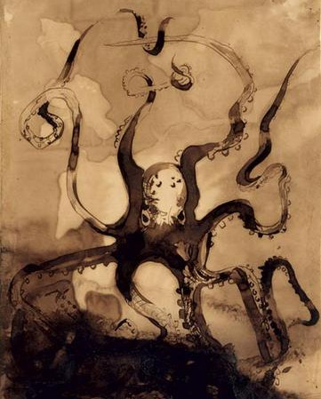

Les pieuvres : des animaux étonnants, de plus en plus étudiés, qui
méritent mieux que de finir dans votre assiette.
Que savons-nous des pieuvres?
Résumé
 Pieuvre(f) et (m) sont des noms vernaculaires ambigus
désignant en français certains céphalopodes
benthiques du sous-ordre Incirrina (principalement la famille des
Octopodidae). Ces animaux se caractérisent, au sein des céphalopodes, par
leurs huit bras et leur grande intelligence. Le corps est entièrement
souple hormis un bec, qui ressemble à certains égards à celui des
perroquets.
Pieuvre(f) et (m) sont des noms vernaculaires ambigus
désignant en français certains céphalopodes
benthiques du sous-ordre Incirrina (principalement la famille des
Octopodidae). Ces animaux se caractérisent, au sein des céphalopodes, par
leurs huit bras et leur grande intelligence. Le corps est entièrement
souple hormis un bec, qui ressemble à certains égards à celui des
perroquets.
Noms vernaculaires et noms scientifiques correspondants
Liste alphabétique de noms vernaculaires attestés en français.
Note : certaines espèces ont plusieurs noms et, les classifications
évoluant encore, certains noms scientifiques ont peut-être un autre
synonyme valide.
-
Pieuvre à anneaux bleus -
Hapalochlaena maculosa
- Pieuvre blanche - Eledone cirrhosa
-
Pieuvre boréale - Bathypolypus arcticus
-
Pieuvre chatrou de nuit - Octopus briareus
- Pieuvre commune - Octopus vulgaris

Une pieuvre commune (dans un aquarium).
Biologie
Alimentation
En temps normal, elle chasse en se déplaçant plutôt au ras du fond,
qu'elle effleure à peine de la pointe de ses tentacules.
Doublant son poids presque tous les trois mois, la pieuvre est dotée d'un
appétit proportionnel à sa croissance. Surtout friande de
crabes et de
coquillages, elle en rejette les carapaces et coquilles. La bouche qui
s'ouvre entre les tentacules, est armée d'une paire de mandibules cornées
normalement invisibles, en forme de bec de perroquet.
Reproduction
La copulation des pieuvres peut durer de une à plusieurs heures. Sécrétées
par le pénis interne, les poches de sperme (ou spermatophores) sont
acheminées par le siphon vers une gouttière du bras hectocotyle qui
servira à les introduire dans la cavité palléale de la femelle.
Une fois fécondée, la femelle surveille ses œufs pondus en grappes au
plafond d'une niche rocheuse. Pendant six semaines, elle les protège, les
ventile, les nettoie, sans manger. Lorsqu'ils éclosent, elle meurt
affaiblie et amaigrie, mais ne meurt pas de faim. Des sécrétions
endocriniennes provenant des deux glandes optiques sont la cause d'une
mort génétiquement programmée.
Intelligence
Enfin, la pieuvre fait preuve d'une intelligence étonnante pour un
invertébré. Elle serait capable de déduire, de mémoriser et d'apprendre.
Par exemple, des pieuvres ont compris par observations successives comment
retirer le couvercle d'un bocal pour accéder à la nourriture contenue dans
ce dernier.

Ce poulpe a ramassé deux moitiés de coquille de noix de coco pour s'en
faire un abri.
Les poulpes dans la culture
Selon
Jean-Claude Ameisen, le poulpe est plutôt vu comme un animal sympathique en particulier en
Grèce où ses capacités de camouflage sont louées par les philosophes : ils
servent d'ailleurs de motif décoratif depuis l'Antiquité.
À partir du XVIIIe siècle,
la légende du kraken, gigantesque poulpe fantastique issue des légendes scandinaves
médiévales et réputées capable de tirer au fond des navires, commence à se
répandre. Peut-être est-elle née à partir d'observations de débris
d'Architeuthis flottant en surface. C'est sans doute en partie sous cette
influence que certains auteurs commencent à décrire les pieuvres comme des
animaux monstrueux, notamment Victor Hugo dans
Les Travailleurs de la mer.

Sources
Ce texte est directement tiré de l'article de Wikipédia
https://fr.wikipedia.org/wiki/Pieuvre